Four parts comprise the UML:
The superstructure of the UML, which is our primary interest, offers standard modeling concepts that enable anyone who understands the superstructure, to create models that other people who understand the superstructure will stand a good chance of interpreting properly.
The Core packages
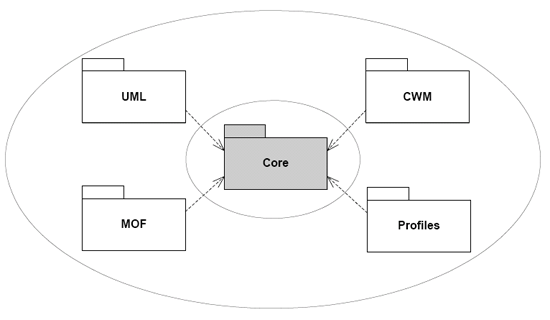
The role of the common Core
The Object Constraint Language, or OCL, is a textual, formal, expression language for rigorously writing constraints using identifiers and values.
Constraints can appear in diagrams, often involving brackets: square for guards and curly for general constraints. Constraints can also express preconditions , postconditions and invariants.
Preconditions, postconditions and invariants are particular easy and powerful ways of improving specifications (design by contract). Preconditions are statements that must turn out to be true before particular things can take place. Postconditions are statements that must turn out to be true after particular things have taken place. Invariants are things that must always hold true when the system is at a stable point, i.e. the elements of the invariant are not actually undergoing change.
The OCL is also used in the UML infrastructure to formally express constraints of the UML metamodel.
The OCL has forAll and exists operators, but they
can only be applied to identifiable existing collections. So it has a
kind of higher-order logic.
The UML lacked a defined way of describing and transporting diagrams with all their layout information.
UML 2.0 brings an XML-based diagram interchange standard.
The architecture that is centered around the Core package is a complementary view of the four-layer metamodel hierarchy on which the UML metamodel has traditionally been based. When dealing with meta-layers to define languages there are generally three layers that always has to be taken into account:
This structure can be applied recursively many times so that we get a possibly infinite number of meta-layers; what is a metamodel in one case can be a model in another case, and this is what happens with UML and MOF. UML is a language specification (metamodel) from which users can define their own models. Similarly, MOF is also a language specification (metamodel) from which users can define their own models.
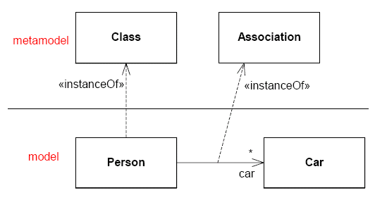
An example of metamodeling; note that not all instance-of relationships are shown
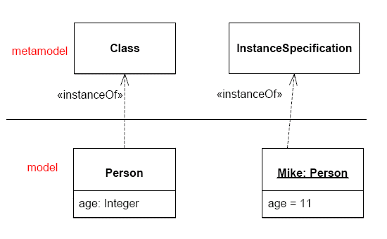
Giving an illustration of a class using an instance specification
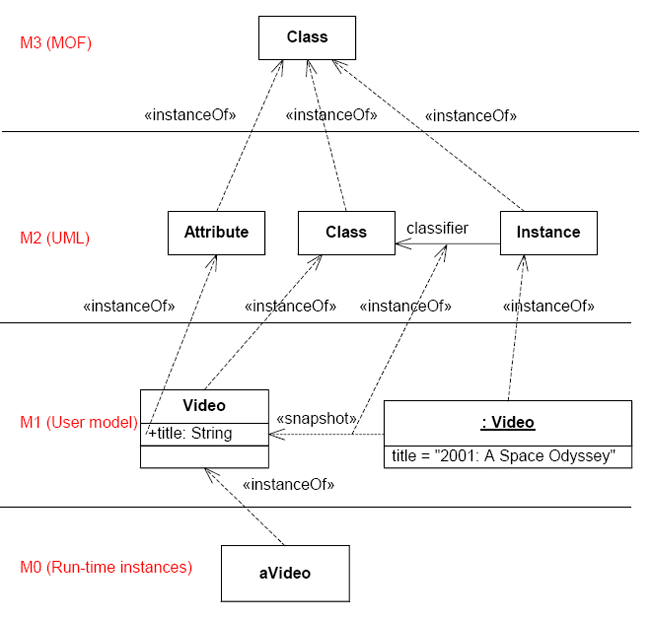
An example of the four-layer metamodel hierarchy
There are two kinds of diagrams: structure diagrams which represent the way things are, and behavior diagrams which represent the way things happen.
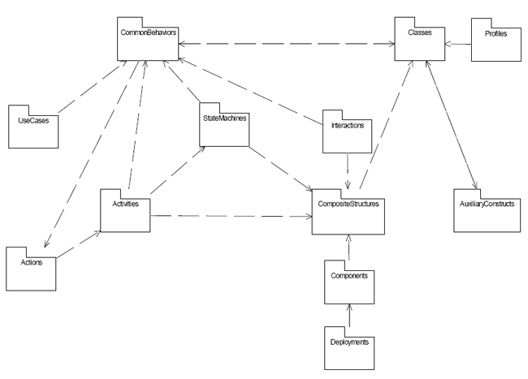
The top-level package structure of UML 2.0 Superstructure
A diagram requires a border or a title, Diagram frame shows how this is done. The border plus title is known as a frame . Some behavioral diagram elements appear on diagram borders - ports or entry/exit points, for example.
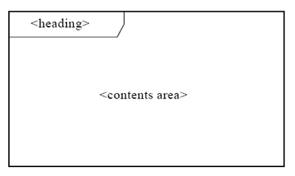
The heading gives the
kind
of diagram and the
name: [<kind>]<name>[<parameters>]
The diagram may have the following
kinds
:
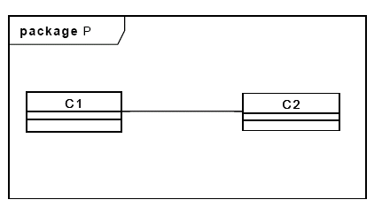
Things are the entities of a UML model.
UML things can be partitioned:
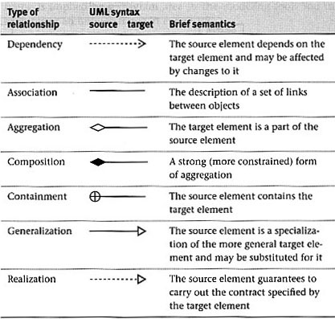
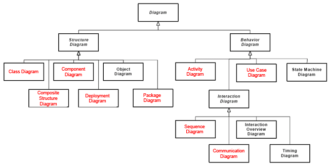
In the context of computer software, the terms verification, validation, and accreditation have specific meanings.
It is important that these activities are kept independent of the development activity and that they are conducted rigorously. This is, among other reasons, to ensure that the customer's confidence in the software can remain high.
Did I build the thing right?
Did I build the right thing?
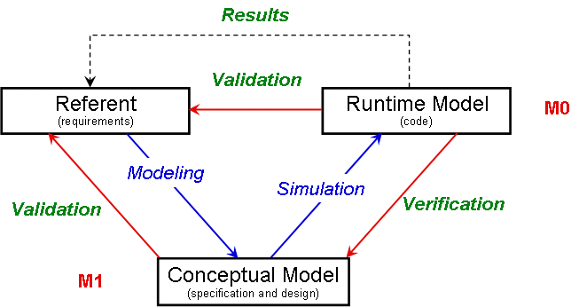
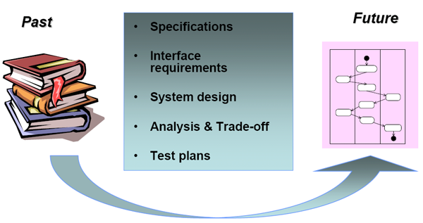
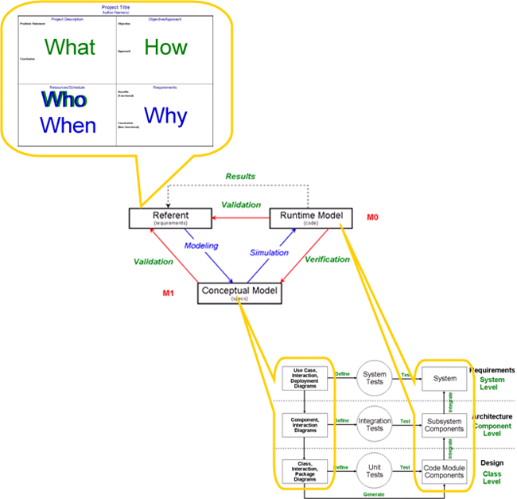